The PANC-DB portal, developed and maintained by the Data integration and distribution team of HPAP, is the source for all experimental data and metadata from both the T1D and T2D programs under HPAP consortium. The PANC-DB contains raw data generated by participating centers using a wide-range of deep phenotyping assays. Here in PANC-DB we also store donor information (demographic, clinical history, brief family medical history) and the materials and methods used to perform the different assays and subsequent analysis. Users can view all data without a registered account, however, downloading data on PANC-DB requires creation of a user account with 3 easy steps. Check out the registration link here!
Here are some quick links to some of our different resources on PANC-DB. There are several different layers to PANC-DB, with many information, tools, visuals and windows located across the website. Some essential and basic links are-
-
How to cite PANC-DB or HPAP: https://hpap.pmacs.upenn.edu/citation
-
Data user agreement: https://hpap.pmacs.upenn.edu/user-agreement
-
The Data status chart (visualization of data availability per donor dataset): https://hpap.pmacs.upenn.edu/explore/data-status
-
Contact us with question or feedback: https://hpap.pmacs.upenn.edu/contact
-
Frequently asked questions: https://hpap.pmacs.upenn.edu/faq
-
Protocols and workflows of hosted assays (this link will take you to histology SOP but you can navigate to other slides from there. See figure-1): https://hpap.pmacs.upenn.edu/explore/workflow/histology
Our Download section is divided into 2 major views-
Summary view or Donor information page: https://hpap.pmacs.upenn.edu/explore/donor/
List view of donors and donor data: https://hpap.pmacs.upenn.edu/explore/download
Download by assay category page: https://hpap.pmacs.upenn.edu/explore/download?category
Below figure of the main menu will aid in browsing and navigating the site by showing what each tab on the menu bar serves.
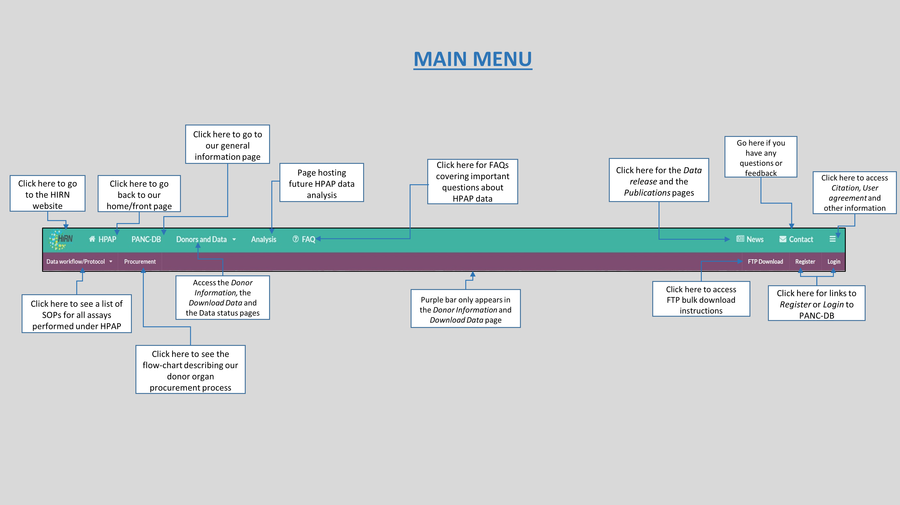
Figure-1
In this section we will look at ways to efficiently skim through the PANC-DB user-interface if you land on the site as a first time user, to retain relevant information. There are many facets on the website and it can sometimes be confusing to navigate a new database and find data of interest.
Here are the steps-
Let’s start with the homepage! This page summarizes everything that PANC-DB hosts, from brief description of all the assays, snapshot of key donor demographics, recent publications and the HPAP team and collaborators.
The next essential page to visit is the Data status page, described in detail in the next section. This page contains a simple matrix that allows you to see current data availability for each bio-sample on PANC-DB. It also gives a snapshot of how many donors are live on the database, when they were accepted, and how these donors compare based on some key demographic and clinical features.
Next, you should definitely check out the News/data release page where we post updates on our database such as changes in metadata, deletion or addition of older or newer data respectively. We also post information on any legacy data (with links to download them), as well as links to download current version of metadata.
At this point if you have identified what donors you are interested in and want additional summary of their medical history, islet quality and tissue sample quality, jump to the Donor information page. Once you are here, you can visit the donor-specific tabs (see figure-2 and figure-4 for details) for the aforementioned evidence.
If you are only interested in very specific data type or specific donors, skip to the Download data page for a list of all donors with the filtering option to narrow your search. You could also download our metadata here! See figure-3 and figure-9 for help.
However, if you are only interested in the experimental data, irrespective of which donor has the data you are looking for or donor’s disease status, you can go to the HPAP category page for bulk download. See section V, page 11 for details.
If you are a returning user and are familiar with the database, try using our simple search box on the homepage or top of the filters on Donor information and Download data pages. You can quickly search for data using specific keywords limited to clinical fields included in the donor filter (figure-3). You can search using the HPAP-IDs, and assay names. For instance, if you type “histology”, it will retrieve list of donors with histology data.
Finally, for a faster download of interested data, utilize our FTP download feature.
At any point, if you are interested in the exact SOPs for any of the experiments conducted, visit protocols.io and search for all “hpap” (search term) related protocols. We also recommend checking them on PANC-DB. See figure-1 for details.
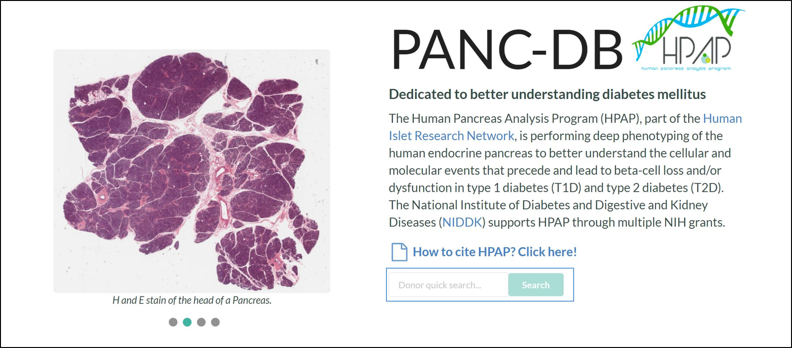
Figure-2
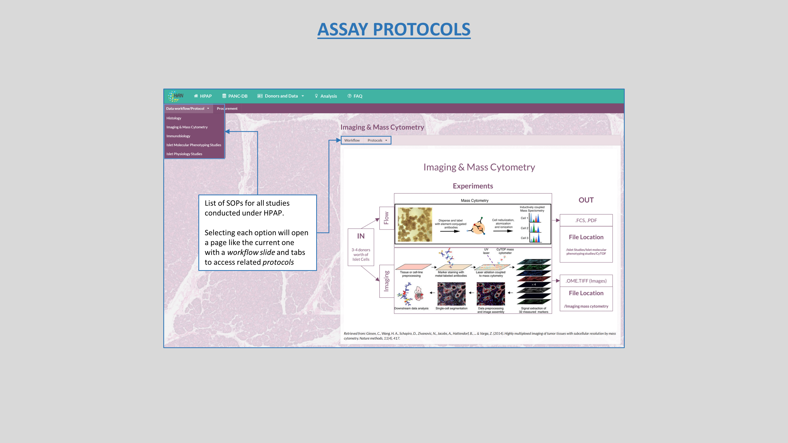
Figure-3
The Data status plot is an easy way to check availability of data for each assay as well as each donor or bio-sample on PANC-DB. The plot is a lose matrix with donors in ascending order on the y-axis as you scroll up/down, and list of assays on the x-axis. The assays remain static as you scroll down the list of donors so it’s easier to interpret. Hovering the cursor over the colored dots reveals the file count, for that intersection of donor and assay. It also shows the donor ID and assay name to avoid scrolling back and forth.
You can download the plot as a “.png” file by selecting the “prepare plot for download” button, on the top right corner of the chart. See figure-4 for reference.
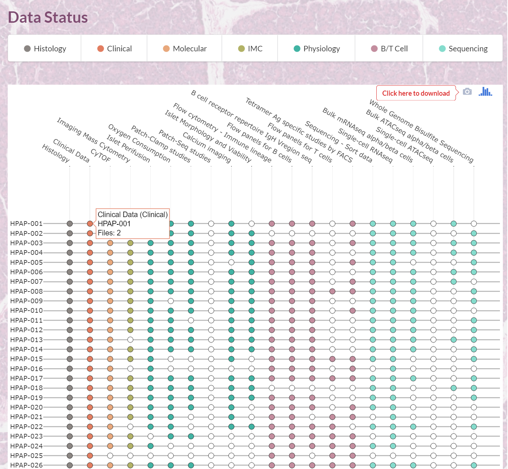
Figure-4
Donor Information page
Clinical- Detailed medical and clinical history of the donor with the ability to download them as a Docx and XLSX file. See figure-7 above for details
Islet isolation- information related to islet isolation and quality for a particular donor. It also contains images of the donor pancreas pre and post fat trimming and islets. See figure-8 below.
Islet function- Viewer for the Islet perifusion and Oxygen consumption plots for the donor. See figure-9 below for details.
Islet composition- Visualization to show endocrine cell counts post CyTOF as well as the tSNE plot for the donor. See figure-10 below for reference.
Imaging mass cytometry- Image viewer showing selected IMC slides for a donor. This is a collection of only a subset of the best captured images. To view the remainder of the images, you can either navigate to Pancreatlas’s advanced viewer linked to this tab or download the raw images and import them to your own image viewing application. See figure-11 below.
Histology imaging- Similar to the IMC viewer, this tab is an application to view a subset of the best Histology slides for the donor. Remainder of the images can be viewed on Pancreatlas or the raw svs files can be downloaded. See figure-11 below.
Sequencing data- this tab is a direct link to access the sequencing files hosted on PANC-DB or DGA for the donor. Download through the DGA portal is recommended.
Download data page
HPAP category view
Let’s start with the Donor Informationpage which is a summary view of our donor datasets. It contains donor cards giving a snapshot of demogrphic, clinical and other functional and qualitative data such as Islet perifusion plots, Islet isolation data and more. We will soon be posting genotypic information as well!
Figure-5 below explains the donor card display in depth, with details on how to find your information of interest using the various tabs and options. You can use he donor filters on the left side of the page to narrow down your search using key donor disease information such as diagnosis (T1D, T2D or No diabetes), HbA1c values, Age etc. Figure-6 describes how to use every option on the filter to browse your data or sample of interest.
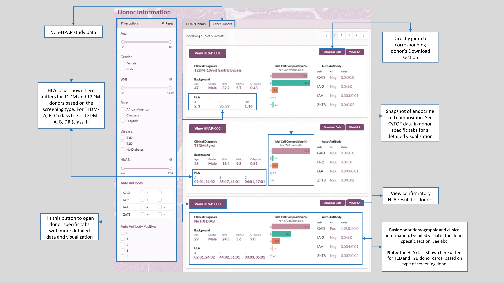
Figure-5
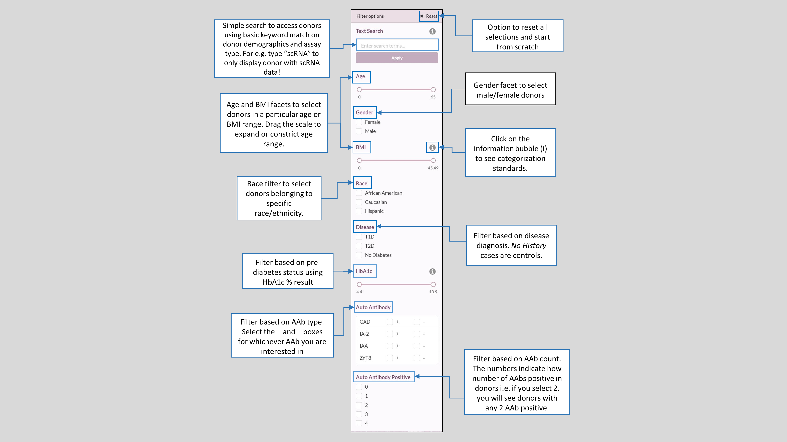
Figure-6
Once you have a dataset of interest, listing only donors with the phenotype of interest, you can navigate to the donor specific tabs. See figure-7 for details on what you will see in this section of the database and how to download specific files, image or information from here.
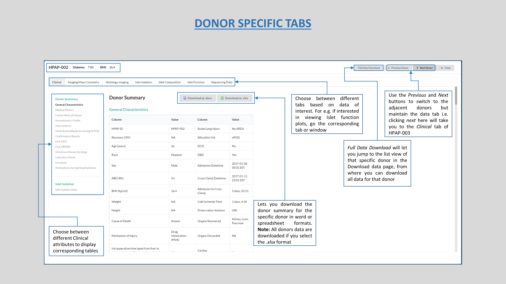
Figure-7
The donor specific tabs for every donor has the following tabs-
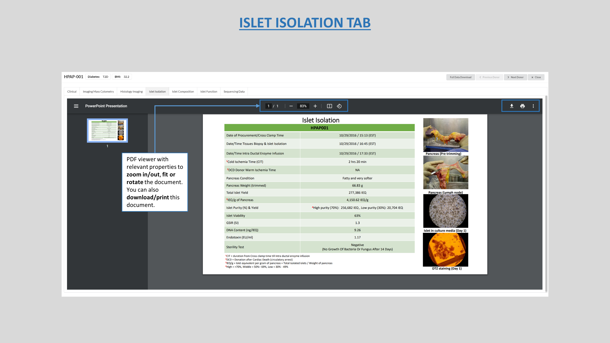
Figure-8
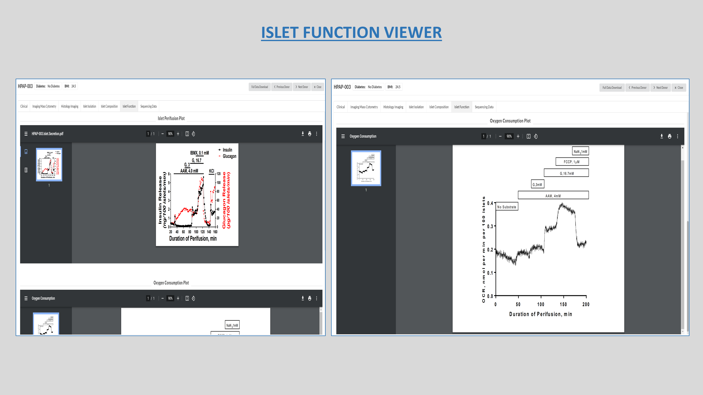
Figure-9
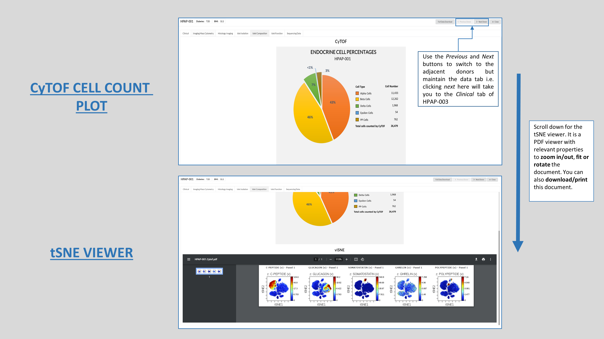
Figure-10
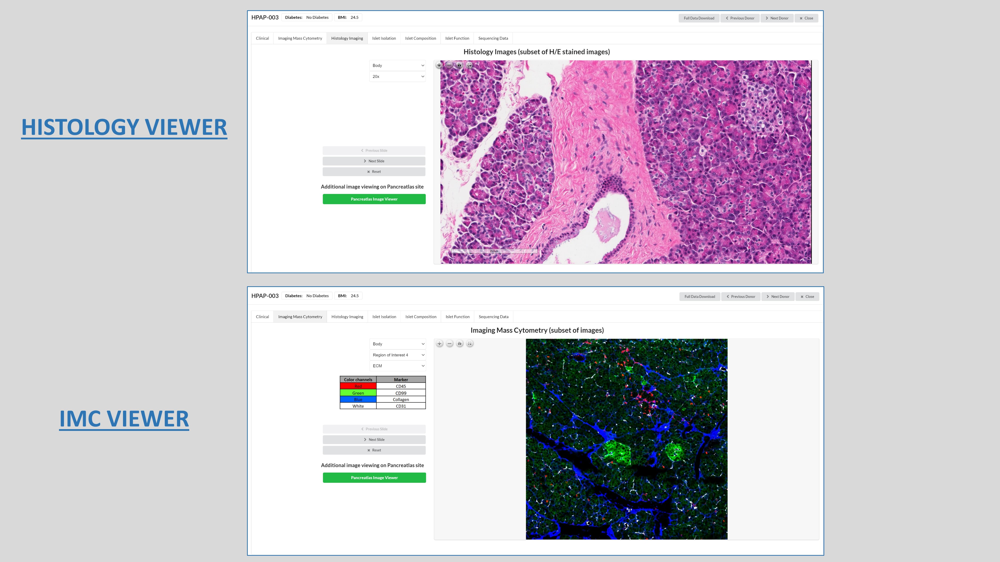
Figure-11
Now let’s move over to the Download Data page where you can see a list view of all donors currently live on PANC-DB.
This page lists all donor datasets live on PANC-DB and clicking on each donor will reveal the underlying sub-folders that contain downloadable data. Please see figure-12 below for reference. In order to download any data, you will have to navigate to the desired folder or sub-folder and select the checkbox next to it. You can either download specific files only, by selecting them or the entire folder containing donor assay data. It is important to note here that the list of donors on this page does not represent the count of donors accepted by the HPAP program. There is usually a delay of about a week in making a recently accepted donor. It however represents the donors currently live (visible) on the database with at least one or more assay data available for download. The basic requirement for a donor to be live on PANC-DB is, to have the “clinical data” ready to display and download. This activates the “donor cards” on the Donor information page.
Figure-12
Since this download can be consuming, owing to large datasets, we recommend our FTP download feature, explained in section VI. People can search the entire website without having to register. However, when trying to download data, you will be prompted to register yourself like shown in figure-13. It’s a simple 3 step process explained here. Refer to figure-13 for ways to avoid downloading empty folders from the list view.
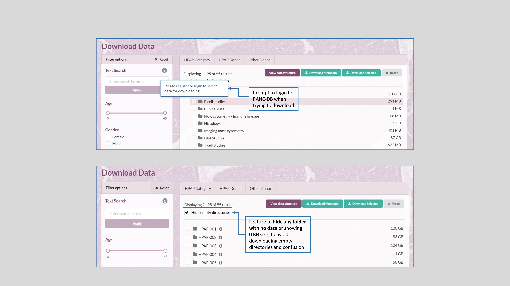
Figure-13
Users can download the metadata on this page as well. Refer to figure-12 for this feature. When you download the metadata, you will acquire a zip file with separate spreadsheets for each assay, as shown in figure-14. You will also download a “README” file with information on each assay, as well as the file “PancDB_Donors” with donor demographic information, RRIDs, and relevant links.
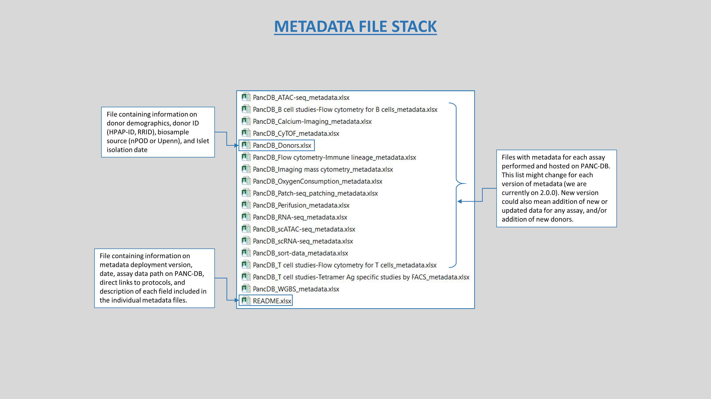
Figure-14
This page gives users the option to download data based on the assay categories, irrespective of the donor type i.e. if you simply wanted to download data for a particular assay such as Histology on PANC-DB, this page will allow you to download all Histology images for all donors with this data. All assays are listed here along with additional and more detailed filters that is revealed when one selects the filter options caption for each category. See figure-15 for reference.
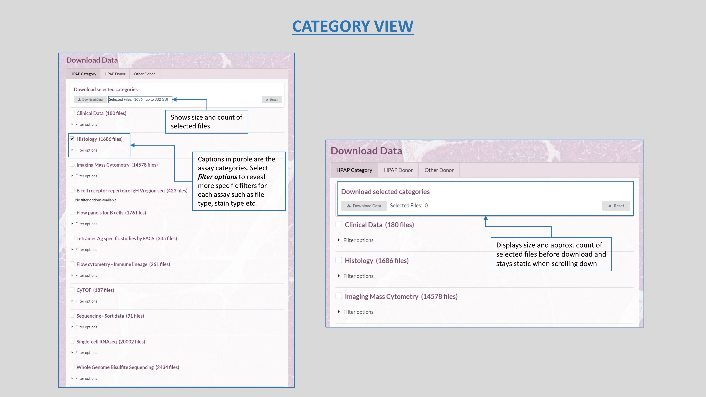
Figure-15
We recommend you conduct all bulk downloading of HPAP data using our FTP feature. This page contains basic and straightforward instructions on how to use bash commands to download. Please note that you will need to log-in or register yourself with HPAP to access this page. You can access this page from the Donor information or the Download data pages. Refer to figure-1 for how to get to the FTP page and figure-16 below for instruction on how to use it.
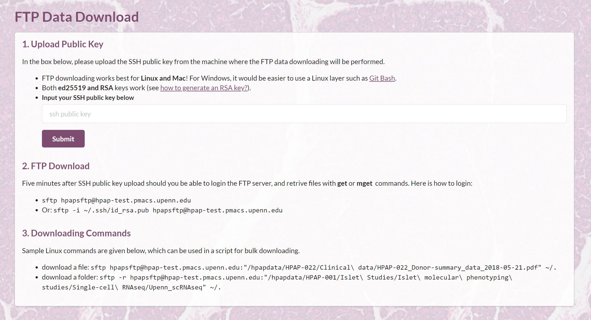
Figure-16
The News and Publications section is divided into two parts-
Data release page- this section contains updates related to HPAP data and PANC-DB features. As you can see in figure-17 below, any changes to data hosted on PANC-DB will be posted here. If any data is deleted for reasons such as availability newer version of files, possible sample contamination etc, links to such legacy data will be available in the data release page.
Publications page- In this section, listed are all HPAP related publications in a chronological order. Direct links to the online copy of the articles is provided for each listed study, so users can download the full text from their respective journals.

Figure-17